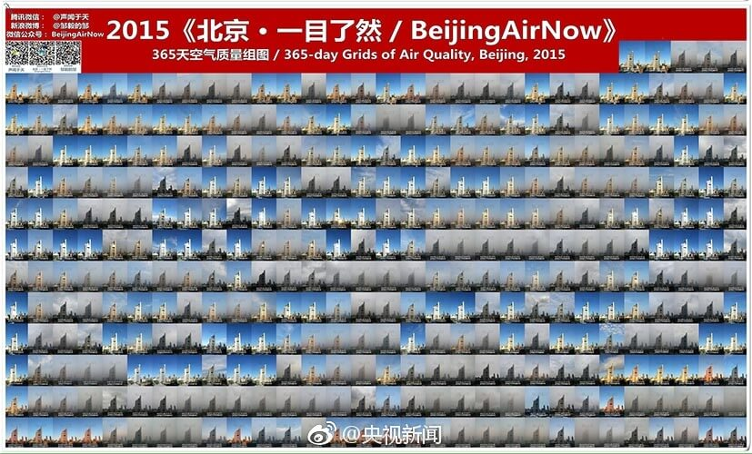
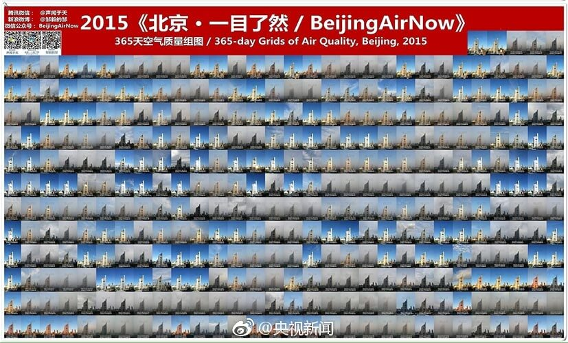

马克我的第一张海报信息图，这是关于2015年北京蓝天颜色与PM2.5的关系图。
之前了解到一个环保人士@邹毅的邹 ，他从2013年开始在同一地点、同一时刻用手机拍摄照片，记录天气变化状况，至今仍在继续坚持。
当时我和我的实习同事陈香君一起参加第二届大学生数据新闻比赛的时候，就想到雾霾的这个主题。当时的想法还挺简单的，就想看看蓝天的能见度与PM2.5是否真的挂钩。
在中华人民共和国环境部可以找到2015年的每天AQI的值，再结合《2015年一目了然》中每天蓝天的颜色。
 

当时还没有真正入这个圈子，但每次都会被那种大海报的环形的柱状图所吸引。何不就用当时青睐的环形图呢？但为了放更多辅助信息，选取了圆的3/4，通过顺时针查看2015年的北京的蓝天状况。
最外圈是代表月份，然后是日期，固定长度的环形条状是从2015年《一目了然》图片中取当天蓝天的颜色。最内圈就是当天的PM2.5的值做的一个环形柱状图，柱状越长，代表当天的PM2.5越高。你会发现，诶，确实是存在这样的关系，外圈的条形颜色越灰，内圈柱子就越长。
上面的环形图更注重信息之美，所以我在下方补充了一个列表形式，更好的去读2015年北京空气质量。
值得开心的是第一次做这种信息图，比赛最后得了三等奖。后来看到人大新闻的公号RUC新闻坊看到同学们对这张信息图的肯定，也提出了些小建议，觉得确实内容上还是有点单薄。不过作为信息图的第一次，还是很开心完成了这次可视化设计。它也是我毕业第一份工作的一扇门一样，让我在数据可视化的道路上继续挖坑填坑挖坑填坑。
第二季的同主题交互网页正在磨蹭的制作中，预计明年年初等今年的数据都有了再补坑。( •̀ᄇ• ́)ﻭ✧